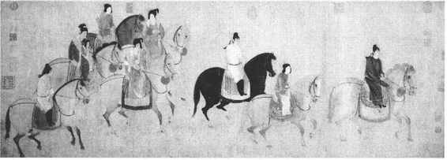
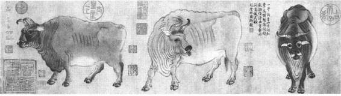

在隋朝国家统一的基础上，唐代经过“贞观之治”，国家强盛，经济繁荣，文化发展。反映在绘画上，创作热情空前高涨，规模宏大，气象万千，名家辈出，灿若群星，为中国绘画史上最光辉灿烂的一页。
阎立德、阎立本兄弟为初唐重要人物画家。他们的先世为北魏、北周时显宦，父阎毗与后周武帝之女清都公主结婚，入隋为朝散大夫、殿内少监领将作少监，擅长书画，谙练旧事，曾为宫廷设计辇辂车舆，多所增损。立德继承家学，唐高宗时，为造衮冕大裘等六服并腰舆伞扇、营造陵墓，官至将作大匠、工部尚书。同时长于绘画，所作《职贡图》，“异方人物诡怪之质，自梁魏以来名手不过也”，惜作品今无传。阎立本（？—673）绍述家学，曾继兄任工部尚书，后官至右相中书令。因擅长绘画，有“右相驰誉丹青”之讥。能作人物、车马、楼观和道释画，曾创作过《秦府十八学士图》、《凌烟阁功臣图》等重要人物肖像画作品。今传《步辇图》（故宫博物院藏，为宋人摹本），描绘唐太宗李世民坐在步辇上，接见吐蕃派来迎娶文成公主的使者禄东赞的情景。（彩图3）图中唐太宗的威严，禄东赞的恭谨，翻译的紧张，反映出他们不同的身份地位和精神气质，都描绘得惟妙惟肖，具有肖像画创作性质，是一次真实的历史事件的写照。另外，相传《历代帝王图》（今藏美国波士顿博物馆）为阎立本所作，描绘了从汉昭帝到隋炀帝共13个帝王及其侍臣的肖像，寓褒贬于人物的精神形态的刻画之中，鲜明生动。
吴道子（约689—759）又名道玄，阳翟（今河南禹县）人，幼孤贫，曾当过县尉和小吏。长于绘画，“未弱冠已穷丹青之妙”。受唐玄宗赏识，召入禁中授以“内教博士”、“宁王友”等职，“非有诏，不得画”。他是一个罕见的多产画家，曾在长安、洛阳一带寺庙中绘制壁画三百余堵。吴道子以他旺盛的精力、高涨的热情、娴熟的技巧、奇异的想象、准确的造型、独创的风格，赢得了“画圣”之称。当他创作壁画时，“长安市肆老幼士庶竞至，观者如堵”，甚至“观者喧呼，惊动坊邑”。所画《地狱变相图》，“使观者腋汗毛耸，不寒而栗，因之迁害远罪者众”。可见他的艺术在群众中的影响。苏轼认为：“诗至杜子美（甫），文至韩退之（愈），书至颜鲁公（真卿），画至吴道子，而古今之变，天下之能事毕矣。”
吴道子被称为“张僧繇后身”，他的艺术继承了张僧繇简括的造型技巧，“笔才一二，像已应焉”，点划之间，时见缺落，后人称之为“疏体”。其用笔如“莼菜条”，雄劲、磊落、气势磅礴。喜用焦墨勾勒，略加淡彩，自然传神，所谓“天衣飞扬，满壁风动”，有“吴带当风”之誉，称之为“吴装”。他的宗教壁画以独特的艺术风格传派，当时叫做“吴家样”。其特点是，落笔时或自臂起，或从足先，不拘规矩，一笔挥就，但又不失尺度。吴道子的作品，今已无存，日本大阪市美术馆收藏的《送子天王图》卷，传为吴道子真迹，其实，最多不过是他传派的摹本草稿。北宋时的武宗元曾在洛阳等地寺庙见过吴道子的壁画，努力学习其造型笔法，从所作的《朝元仙仗图》（今藏美国某私人处），可探知其艺术特点。除文献记载外，要了解吴道子的艺术，莫高窟的盛唐壁画和唐宗室墓葬壁画，或可提供一些线索。
单独以妇女儿童作为绘画创作题材，在唐代有了新的发展。在此以前，妇女和儿童的形象在绘画中出现，或者作为人物故事中的陪衬，或者作为封建说教的工具，如《女史箴图》；而作为描写她们的日常生活用以玩赏为目的作品，则是在唐代才大量出现的，其代表为张萱和周昉。
张萱，京兆（今西安）人，活动于盛唐开元年间。他的贵族妇女形象，反映出盛唐时代的享乐欢快的气氛。作品有宋徽宗赵佶临摹的《捣练图》（今藏美国波士顿博物馆）、《虢国夫人游春图》（今藏辽宁省博物馆）等。前者描绘宫中妇女捣练时的各种劳作活动，细节生动，充满生活气息；后者描绘杨贵妃三姊虢国夫人及其眷属骑马郊游，队伍花团锦簇，反映出杨家姊妹的显赫与骄纵。（图13—7）

图13-7 张萱《虢国夫人游春图》局部
周昉，字景玄，长安（今西安）人，贵族出身，官至宣州长史，活动于唐代宗时期。他的仕女画，“初效张萱，后则小异”。所画肖像，“不唯形似，兼移神气”。宗教壁画，首创“水月观音”，广为流传，被称为“周家样”。传世作品有《挥扇仕女图》（今藏故宫博物院），描绘了一群衣着华丽的宫中妇女悠闲散漫、百无聊赖的生活。人物的苦闷情态跃然画上，呼之欲出。周昉笔下的妇女，已失去了张萱作品那种欢乐气氛，反映出时代情绪的变化。相传为周昉作品的《簪花仕女图》（今藏辽宁省博物馆），是一幅被揭裱下来的唐代屏风画，其技巧熟练、笔法细腻，设色浓艳，是一幅优秀的唐代无名匠师之作。
李思训（651—716），字建，为唐宗室。高宗时任江都令，武则天当权时弃官潜匿，中宗复位任宗正卿，玄宗时官至右武卫大将军。擅长山水，继承了展子虔以来的青绿山水画法，金碧辉煌，灿烂耀目，为后世所崇。他的作品内容，没有摆脱六朝以来的求仙访道主题。存世《江帆楼阁图》（今藏台北故宫博物院），相传为他的作品，画江天浩渺，风帆溯流，境界开阔。树木画法多种多样，山石在勾线的基础上有少许皴法，是对展子虔《游春图》的继承发展。李思训之子李昭道继承家学，亦以画青绿山水知名于世，与其父合称“大小李将军”。
王维（701—761），字摩诘，著名诗人，亦长绘画。晚年隐居陕西蓝田，并以．其庄园景致创作成《辋川图》，开创了文人士大夫别墅画的风气，为后世所崇。苏轼称赞他“诗中有画”，“画中有诗”。明末董其昌等人提倡山水画“南北宗”说，将李思训说成“北宗之祖”，崇王维为“南宗之祖”，创水墨写意文人画。相传王维有《伏生授经图》（今藏日本大阪市美术馆）、《雪溪图》（今藏台北故宫博物院）等，均不可信，王维画风有待进一步探讨。
鞍马为汉代以来流行的绘画题材，随着绘画的分科发展，至唐代则出现了一批以画鞍马而知名的画家，如曹霸、韩幹、陈闳、韦偃等。牛也经常入画，画牛的专家有韩滉、戴嵩等。描绘牛、马（包括龙、虎、獐、鹿、猿、猴、猫、狗等）一类的家畜走兽的画，宋代概括为畜兽画。
韩幹出身贫寒，得王维资助，随曹霸学画，以画肖像、鞍马知名于时。天宝中召入宫廷，累奉命画御马，玄宗要他照着陈闳的马画，他说：“臣自有师，陛下内厩之马，皆臣师也。”可知他的追求。传世作品有《照夜白图》（今藏美国大都会博物馆），画肥壮马一匹，拴于桩上，作昂首嘶鸣状，十分生动。
韩滉（723—787），字太冲，长安人。由地方官升至宰相，封晋国公。吏事之余，喜好绘画，长于人物、田家风俗及牛马等，落笔绝人，然不多作。传世有《五牛图》（今藏故宫博物院），画牛五头，各具姿态。（图13—8）所用线条，粗壮有力，表现出牛的健壮体魄和坚韧的皮质，神情活现，在中国画史上不多见。

图13-8 韩滉《五牛图》局部
唐代壁画有宫殿、寺观、石窟、墓室等数种。宫殿、寺观壁画之盛，见诸文献记载，超出以往时代，但随着建筑物的毁灭，早已渺然无存，今天所能见到的，只有石窟和墓室里的壁画。
敦煌莫高窟发展至唐代为全盛时期，今存唐窟有二百余个。随着国家统一与社会安定，唐朝的经济和文化空前繁荣发达，唐窟的壁画题材，由南北朝以来流行的宣扬忍耐牺牲精神的主题，逐渐转变为渲染以西方极乐世界的享乐情景为宗旨。如《西方净土变相》，把极乐世界描绘得富丽辉煌，殿堂楼阁，参差错落，歌童舞女，一派升平景象，实际上是帝王贵族的现实生活写照（320窟、127窟可为代表）。《法华经变相》、《报恩经变相》中穿插的其他佛教故事及生活情节，如45窟的胡商遇盗、217窟的化城喻品，85窟的善友品，以及众多的生产劳动场面，曲折地反映了当时社会生活的各个方面，内容极其丰富。《维摩诘变相》为最受欢迎的题材，它所刻画的维摩具有充沛的精力、潇洒的风度、闪烁的眼神，是当时士大夫形象的写照。103窟的《维摩诘变相》，线条简括流动，有吴道子画派风格。其旁帝王听法的场面，可从中探知唐代著名画家作品《职贡图》、《帝王图》一类题材的表现方法。整个敦煌唐代壁画，无论是描写佛、菩萨，还是天王、力士、伎乐、飞天，都更世俗化，充满着人间的温情，而体态婀娜，夸张变化，有着动人的艺术效果。
唐代的墓室壁画，今发掘出土的有唐初的李寿墓，盛唐的章怀太子李贤墓、懿德太子李重润墓、永泰公主李仙蕙墓等，都是属于皇室宗族的墓葬。这些墓室壁画直接出于宫廷匠师之手，其规模与气派，与敦煌唐壁画相比，有过之而无不及，是其他唐代绘画作品不可替代的。从李寿墓中的农耕、放牧、杂役等画面，可以了解到初唐的农牧手工业生产。李贤墓中的《出行图》、《客使图》、《仪仗图》、《马球图》等，描写了宫廷贵族的奢侈豪华，是当年宫廷贵族生活的写照。其中《客使图》与传世《职贡图》的造型十分相近。李仙蕙墓中的《宫女图》，描绘宫女们姿态多端，不唯衣着华贵，而且形象美丽，飘飘欲仙，更是一幅完整而细腻的杰作。（彩图19）